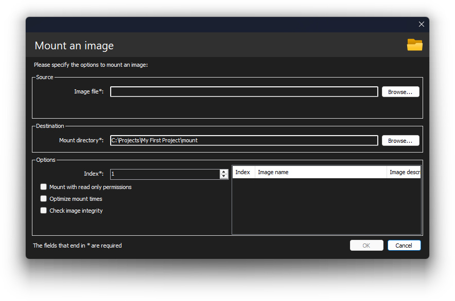
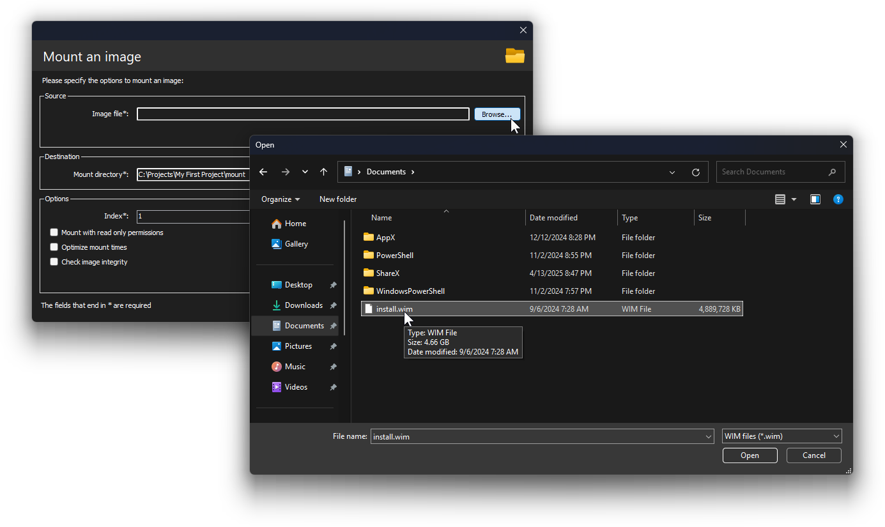
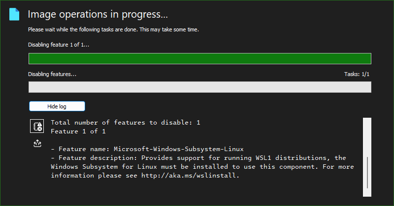
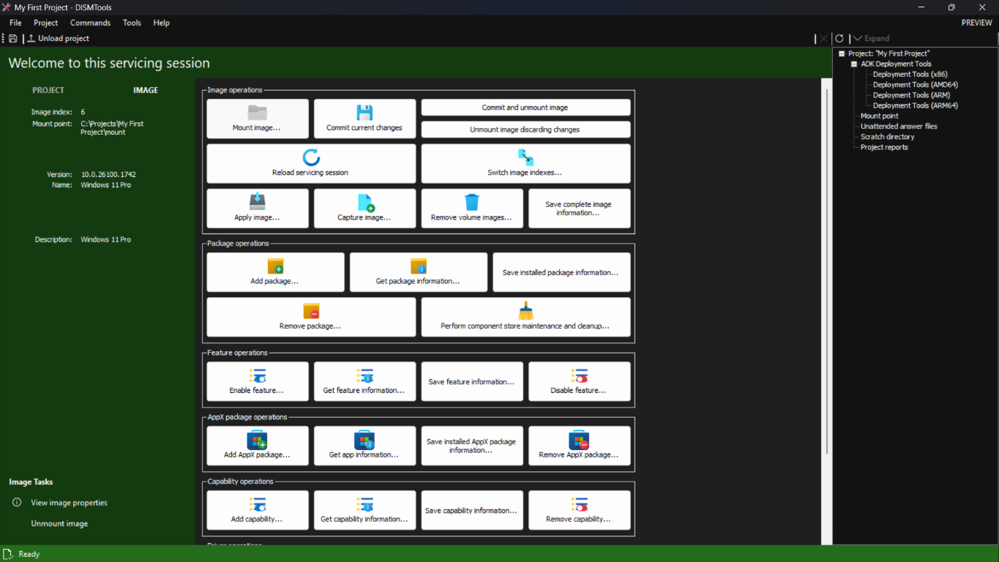

Che tu sia nuovo alla manutenzione delle immagini o provenga da altri programmi, questa guida ti aiuterà a conoscere gli strumenti di distribuzione di Windows e a configurare il tuo ambiente di lavoro per il deployment.
Comprendere gli strumenti di distribuzione e installazione di Windows
Per cominciare, dovremo tornare ai tempi di Windows Vista, per capire i suoi strumenti di setup e distribuzione. Non preoccuparti, questa non è una sezione lunga.
Prima di questo sistema operativo, il CD di installazione conteneva tutti i file dell'installazione di Windows in modo compresso, ma non conteneva un'intera installazione di Windows in un unico file. Per esempio, ogni file di 3D Pinball era compresso come file separati. Questo significava che avevi bisogno del CD durante tutto il processo di installazione, fino alla fine. Se lo estraevi durante l'installazione, ti sarebbe stato chiesto di reinserirlo:

I trasferimenti continui dal CD al disco rigido significavano anche che l'installazione impiegava molto tempo.
Per ovviare a questi limiti, Microsoft iniziò a lavorare su un nuovo sistema di setup durante lo sviluppo di Windows Vista (nome in codice Longhorn) che avrebbe installato Windows in meno di 15 minuti:
Myers afferma che l'obiettivo è che un'installazione non presidiata di Longhorn richieda meno di 15 minuti dall'inizio alla fine. Rispetto ai 45–60 minuti di installazione di Windows XP, è sorprendente, anche se le pre-alpha di Longhorn sono ancora piuttosto lente.
— Paul Thurrott, "Longhorn Setup and Deployment Strategies"
Questo portò al formato di file WIM, che è un singolo file contenente una o più installazioni complete di Windows. Questo significa che il computer deve eseguire trasferimenti dai supporti di installazione all'HDD una sola volta: durante l'espansione dell'immagine.
Ovviamente, poiché si lavora con nuovi formati e standard di distribuzione, la tecnologia esistente non sarebbe più sufficiente, quindi Microsoft incluse alcuni strumenti di distribuzione, gestione e manutenzione come parte del Windows Vista AIK.
Durante lo sviluppo di Windows 7, Microsoft raccolse il feedback dei clienti e consolidò tutti questi strumenti in un'unica applicazione che sarebbe stata anche integrata nel sistema operativo. Chiamata DISM, questa utility è in grado di svolgere tutte le funzionalità presenti nei precedenti strumenti di Windows Vista, e molto altro, grazie ai miglioramenti introdotti nelle versioni successive di Windows.
DISM è un'utilità da riga di comando con una sintassi che potrebbe sembrarti difficile. Tuttavia, sono disponibili diverse interfacce utente; questa è una di esse.
Cosa offre DISMTools
Come interfaccia utente per DISM, DISMTools offre alcune funzionalità interessanti:
- È il primo UI basato su progetti, che permette una più semplice organizzazione del lavoro
- Fornisce informazioni ricche e rapide e offre strumenti che ti aiutano nelle operazioni di gestione. Maggiori dettagli si trovano nella Fase 2 di questo tour
- Offre strumenti integrati per il deployment e il testing delle immagini. Maggiori dettagli si trovano nella Fase 3 di questo tour
In questa Fase imparerai le operazioni di base.
Creare il tuo primo progetto e montare la tua prima immagine di Windows
Per creare il tuo primo progetto, clicca semplicemente il collegamento "Nuovo progetto..." nella schermata principale, oppure vai su File > Nuovo progetto...
Verrà mostrata la seguente finestra di dialogo:
Digita il nome e la posizione del progetto. Puoi scegliere il nome che preferisci. Successivamente, clicca OK.
Dopo la creazione del progetto, verrai accolto dalla vista progetto:
Prima di poter fare qualsiasi cosa con il progetto appena creato, devi montare un'immagine di Windows. Per farlo, clicca il pulsante Mount image.... Vedrai la seguente finestra di dialogo:
Specifica un'immagine di Windows, la posizione in cui montarla e l'indice. Puoi configurare opzioni aggiuntive, ma nella maggior parte dei casi non sono necessarie.
Come ottengo un'immagine di Windows?
Le immagini di Windows si trovano solitamente nel file install.wim, che si trova nella cartella sources del supporto di installazione di Windows. Puoi anche trovarle nel file install.esd, che è una versione compressa del file WIM. Questo file si trova solitamente nello stesso percorso del WIM.
Dopo averlo copiato, specificalo nella finestra di dialogo, così:
Configura le impostazioni rimanenti menzionate in precedenza e clicca OK. Poi attendi il completamento dell'operazione.
Durante l'utilizzo di DISMTools, vedrai questo pannello di avanzamento. Qui puoi consultare i log delle operazioni e l'output della riga di comando DISM. Clicca uno dei link qui sotto per vedere entrambe le sezioni:
|  | |
Puoi passare da una sezione all'altra cliccando i pulsanti in basso a sinistra.
Al termine dell'operazione di mount, tornerai alla vista del progetto, ma con più elementi da esplorare:
Ce l'ho fatta. E adesso?
Dopo aver montato la tua immagine, puoi continuare in due modi:
- Da solo
- Con l'aiuto delle restanti Fasi di questo tour
Se vuoi continuare il tour, clicca il pulsante Fase 2 in alto a destra per accedere alla sua versione testuale.
Se preferisci continuare il tour in formato video, clicca qui.